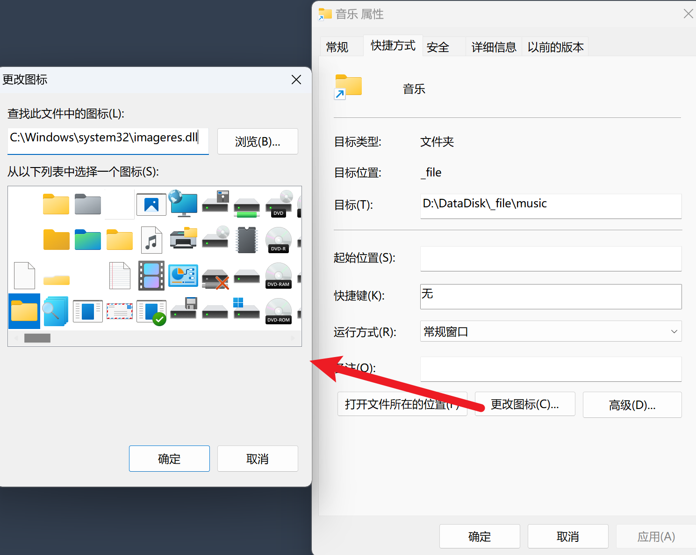
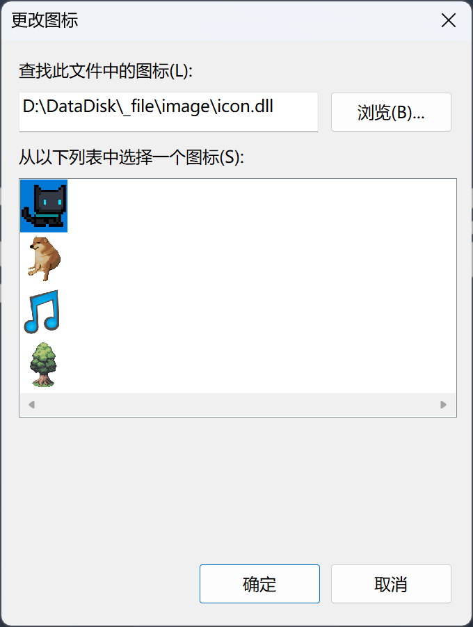

首次编辑：2024/7/18/9:52
最后编辑：2024/7/18/10:21
假如这是文件夹的内容：
./
dog.ico
cat.ico
music.ico
tree.ico
首先新建一个icon.rc文件，内容为：
dog ICON dog.ico
cat ICON cat.ico
music ICON music.ico
tree ICON tree.ico
然后在命令行下输入：
windres -i icon.rc -o icon.o --use-temp-file
gcc -shared icon.o -o icon.dll
得到的icon.dll中就包含有我们想要放入的.ico文件了。
这个dll的一个用处就是拿来更换文件夹/快捷方式的图标了，这也是我挖掘这个方法的原因。
右键点击一个快捷方式，选择“属性”，在属性窗口中点击“更改图标”，可以看到系统中有个imageres.dll中带有很多图标。

点击“浏览”，然后找到我们编译好的icon.dll，在下面的选择框中就会出现我们编译进去的图标。

当然，直接选择一个
.ico文件也是可以的，并不一定非要.dll文件。
作者：码鸽
链接：https://code-pigeon.github.io/blog/html/Windows将多个图标编译为dll.html
版权声明：博客所有原创内容（包括但不限于文章、图像等）除特别声明外，均采用CC BY-NC-SA 4.0国际许可协议。任何人均可自由传播，但禁止用于商业用途且必须署名并以相同方式分享。